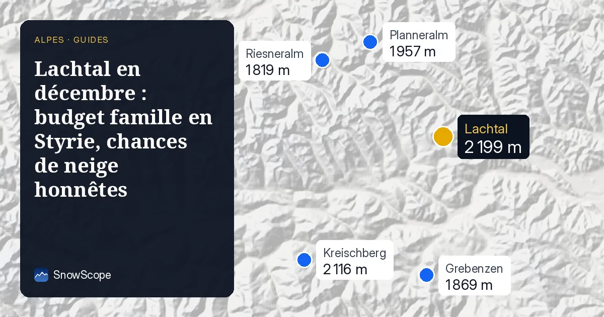
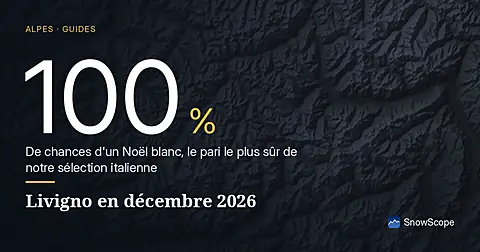

Lachtal en décembre : budget famille en Styrie, chances de neige honnêtes
Lachtal facture 62 EUR pour un forfait adulte à la journée en 2026-27, et les jeunes enfants skient gratuitement. La station se situe entre 1 572 et 2 199 m en Styrie, offrant 25 km de pistes et 10 remontées adaptées aux familles. Pour décembre, les chances de neige s'améliorent au fur et à mesure du mois : à mi-montagne (1 885 m) la deuxième moitié voit 30 cm ou plus dans environ sept hivers sur dix selon nos records.
Consultez les prévisions neige en temps réel pour Lachtal sur l'application SnowScopeHauteurs de neige, alertes poudreuse et carte 3D, gratuitement.
Ce que coûte décembre et ce que vous pouvez éviter
Un forfait adulte à la journée coûte 62 EUR ; un forfait 6 jours en début de saison coûte 293,50 EUR. La plus grande économie arrive si vous avez des enfants : selon la liste officielle des prix, tout enfant né en 2021 ou après (maintenant âgé de 5 ou 6 ans) reçoit un forfait gratuit. Pour une famille de deux adultes et un jeune enfant, cela rend une semaine complète bien moins chère que ce que vous payeriez dans une plus grande station.
Le terrain est compact : petites remontées, pistes courtes, surtout des pentes pour débutants et skieurs intermédiaires. Cela convient aux familles qui veulent rester ensemble et éviter une journée complète de files d'attente.


Épaisseur de neige sur laquelle vous pouvez compter à chaque altitude
Lachtal est bien situé en altitude pour ce coin de l'Autriche. Un 15 décembre typique montre 30 cm à la base (1 572 m), 46 cm à mi-montagne (1 885 m) et 58 cm au sommet (2 199 m). Sur les 46 hivers de nos records, le sol dénudé n'a jamais apparu à la base le 15 décembre.
La forme du mois de décembre compte plus que vous ne le penseriez. Aux semaines 1–7 et 8–14, seulement 54 % et 63 % des hivers ont 30 cm ou plus à mi-montagne. À partir de la semaine 15–21, ce taux passe à 72 %. La semaine de Noël (22–28 décembre) atteint 78 %. Choisissez les bonnes dates et vous avez bien plus de chances de skier sur une bonne base.
Comment les 15 derniers hivers ont changé la donne
Le mois de décembre à Lachtal est devenu plus maigre. L'épaisseur moyenne de neige à mi-montagne est passée de 57 cm dans les 15 premiers hivers de nos records à 33 cm au cours des 15 derniers hivers (2011–12 à 2025–26). À la base, la part des semaines de Noël avec 30 cm est passée de 80 % à 40 %.
L'hiver dernier (2025–26) a souligné le risque : mi-montagne n'avait que 9 cm le 15 décembre et 7 cm le 24 décembre. C'était assez maigre pour nécessiter une gestion soigneuse des pistes et une mauvaise neige sur de nombreuses pentes. Si vous réservez une semaine fixe en décembre, vous pariez sur la prévision météo plus que sur l'historique.
Quand réserver, et quand rester flexible
La première semaine de décembre est un pari ici : seulement la moitié de nos hivers ont 30 cm à mi-montagne à ce moment-là. La semaine avant Noël et la semaine de Noël elle-même sont des paris plus sûrs, avec 72 % et 78 % de chances d'avoir une bonne épaisseur. Si vous pouvez réserver tard et annuler gratuitement, faites-le. Attendez que la prévision se stabilise, consultez la carte de neige le 1er ou 2 décembre, et décidez à ce moment-là.
Si vous devez réserver des mois à l'avance, visez le 15–28 décembre. Si vous n'avez pas d'autre choix qu'un début décembre, ayez un plan B : soit une chaîne de montagnes plus élevée au nord, soit une acceptation de skier sur de la neige maigre sur des pistes bien damées.
Turracher Höhe : à proximité, mais pas mieux pour décembre
Au sud-ouest de Lachtal se trouve Turracher Höhe, une autre petite station styrienne-carinthienne. Elle est plus basse et reçoit moins de neige en décembre : un 15 décembre typique, elle a 23 cm à mi-montagne (1 792 m), et seulement 39 % des hivers ont 30 cm pendant les semaines de mi-décembre. Son forfait journalier coûte 72,50 EUR et son forfait 6 jours en début de saison 353 EUR, tous deux plus chers que Lachtal.
Donc si vous voulez une sortie familiale en décembre avec un budget serré, Lachtal est à la fois moins cher et plus enneigé. Le choix n'est pas entre ces deux petites stations, mais entre réserver une petite station à tout dans un décembre qui s'appauvrit, ou se diriger vers le nord et l'altitude où les chances sont meilleures.
Conseils aux skieurs
- Apportez une preuve d'âge pour les enfants : tout enfant né en 2021 ou après reçoit un forfait gratuit. Cela compte plus que n'importe quelle réduction adulte ici.
- Évitez la première semaine de décembre sauf si la prévision est inhabituellement bonne. Réservez plutôt pour le 15–28 décembre, quand 70 % des hivers ont une bonne base.
- Si vous devez réserver des semaines à l'avance, choisissez un forfait que vous pouvez annuler sans frais. Décidez en début décembre quand la prévision de neige devient plus claire.
- Pour le ski hors-piste ou en couloir après de la neige fraîche, consultez d'abord le bulletin officiel d'avalanches de Styrie sur lawinen.report.
- Si mi-montagne semble dénudée en début décembre, basculez vers une station plus élevée plutôt que d'espérer que les conditions s'améliorent.
À propos de ces chiffres
Les hauteurs de neige des stations sont la neige la plus épaisse sur le haut du domaine à la date indiquée ; ce sont des estimations pour une zone, pas une mesure en un point. Les prévisions peuvent changer. Consultez toujours le bulletin d'avalanche officiel avant le hors-piste.
Bulletins d'avalanche officiels: Lawinenwarndienst Steiermark
Citer ce bulletin
Pour la recherche, l'enseignement ou la presse : chiffres et graphiques réutilisables librement sous CC BY 4.0 avec cette citation.
SnowScope (2026), Lachtal en décembre : budget famille en Styrie, chances de neige honnêtes, https://snowscope.app/blog/fr/2026/11/lachtal-december-ski-styria-budget-snow.html, consulté le 2026-11-14
SnowScope (Atlas Labs). (2026, November 14). Lachtal en décembre : budget famille en Styrie, chances de neige honnêtes. SnowScope snow reports. https://snowscope.app/blog/fr/2026/11/lachtal-december-ski-styria-budget-snow.html
BibTeX
@misc{snowscope2026lachtaldecemberskistyria,
author = {{SnowScope (Atlas Labs)}},
title = {Lachtal en décembre : budget famille en Styrie, chances de neige honnêtes},
year = {2026},
month = nov,
howpublished = {\url{https://snowscope.app/blog/fr/2026/11/lachtal-december-ski-styria-budget-snow.html}},
note = {Published 2026-11-14 17:24 UTC; accessed 2026-11-14}
}· CC BY 4.0 · Méthodes, données et outils →
Lachtal : neige et température selon l'altitude, cet hiver vs l'hiver dernier (outils) →
Suivre Lachtal
Gratuit : un message quand la neige arrive, et la météo chaque matin.
Autres bulletins neige

La neige du jour à Livigno, ce que la prévision saisonnière européenne annonce pour décembre, et pourquoi l'altitude l'emporte sur un mois doux à Noël.

Un séjour de 3 jours pas cher au lac de Côme en décembre, avec les vrais prix 2026-27 : trains, bateaux, funiculaire et ski à Piani di Bobbio ou Madesimo, l'économie par rapport à Cortina et les chances de neige à Noël.